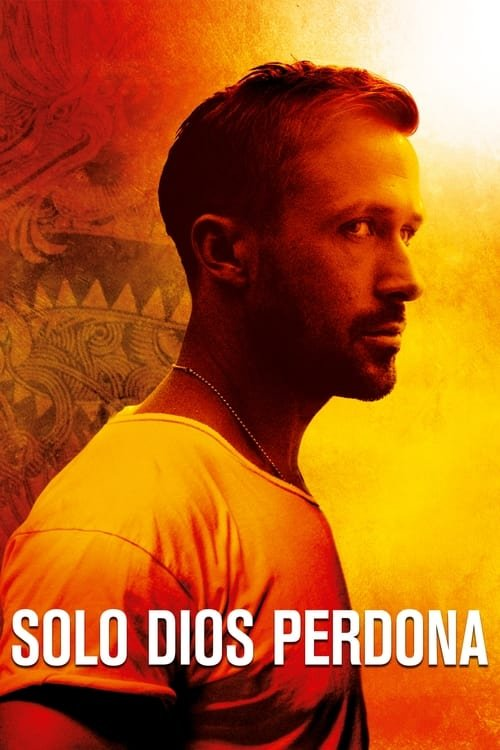

Sólo Dios perdona (2013)
Sinopsis Rápida
En el sórdido inframundo de Bangkok, un traficante de drogas debe enfrentarse a las consecuencias de un brutal asesinato cometido por su hermano, mientras una implacable madre busca venganza. ¿Hasta dónde llegará para limpiar su nombre y sobrevivir a la furia de su propia familia?
Sinopsis Detallada
Nicolas Winding Refn nos sumerge en un oscuro y estilizado thriller ambientado en la vibrante y peligrosa Bangkok. Julian, un expatriado americano, se ve obligado a enfrentarse a las consecuencias del asesinato cometido por su hermano Billy. Su poderosa y despiadada madre llega de Estados Unidos para exigir justicia, lo que empuja a Julian a un laberinto de violencia y corrupción. La película se caracteriza por su atmósfera opresiva, su estética visualmente impactante y su exploración de temas como la familia, la venganza y la moralidad ambigua en un mundo criminal implacable. La actuación magnética de Ryan Gosling y la perturbadora presencia de Kristin Scott Thomas complementan a la perfección la fría y elegante dirección de Refn.
¿Por qué tenés que verla?
- Una experiencia cinematográfica visualmente cautivadora e inolvidable.
- La dirección estilizada y la banda sonora hipnótica de Cliff Martinez crean una atmósfera única.
- Su estilo distintivo ha influenciado a numerosos cineastas y se ha convertido en una película de culto.
- Exploración compleja de la masculinidad tóxica y las relaciones familiares disfuncionales.
Idea Extra
Análisis de la estética visual de la película: El uso del color, la iluminación y la composición de planos en 'Sólo Dios Perdona'.